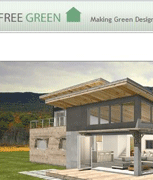

|
Unit #5 -Floor Plans
A. Kitchen B. Bathroom C. Using "Slabs" D. Georgian Home E. Sketching Assignment #5 |

|

|
ObjectiveDiscuss factors that are important in the design of bedrooms. Plan the size and location of closets for a typical residence. Plan a furniture arrangement for a room. Implement important design considerations for bathrooms. Plan a bathroom that follows solid design principles. Plan the service area of a home by applying good design principles. Design a functional kitchen to meet a family’s needs Select kitchen appliances that are appropriate for a design. Plan an efficient clothes care center. Describe appropriate dimensions for garage space. Identify the rooms and areas that comprise the living area Apply design principles to planning a living room Integrate the furniture in a living room plan Analyze a dining room using good design principles. Design a functional entry and foyer. |

|